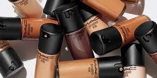
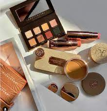
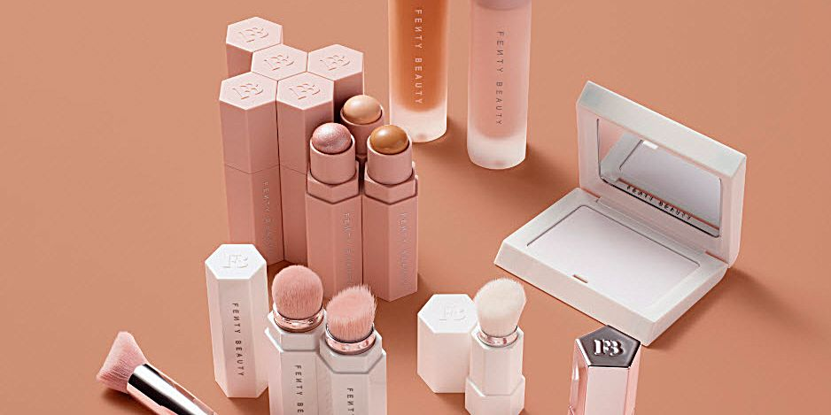

Marcas Más Famosas
Asesorate sobre qué utilizar en tu piel...
El mundo del maquillaje está lleno de marcas famosas que ofrecen productos de alta calidad y una amplia gama de colores y texturas para satisfacer las necesidades de todos los amantes del maquillaje. Desde bases de maquillaje hasta labiales, estas marcas son líderes en la industria y continúan innovando con nuevos productos y tendencias.
MAC Cosmetics
MAC Cosmetics es conocida por su amplia gama de productos y colores vibrantes. Sus bases de maquillaje ofrecen una cobertura impecable y duradera, mientras que sus labiales son famosos por su textura cremosa y pigmentación intensa.
Anastasia Beverly Hills
Anastasia Beverly Hills es aclamada por sus productos para cejas, que incluyen lápices, geles y polvos que ayudan a definir y dar forma a las cejas de manera natural. Además, sus paletas de sombras de ojos son muy populares entre los maquilladores y aficionados por su excelente pigmentación y variedad de tonos.
Fenty Beauty by Rihanna
Fenty Beauty by Rihanna se ha destacado en la industria del maquillaje por su enfoque en la diversidad y la inclusión. Su línea de bases de maquillaje ofrece una amplia gama de tonos para adaptarse a todos los tonos de piel, y sus iluminadores y bronzers son adorados por su brillo natural y duradero.
Urban Decay
Urban Decay es conocida por su estética atrevida y rebelde. Sus paletas de sombras de ojos Naked son icónicas y ofrecen una combinación de tonos neutros y audaces para crear una variedad de looks. Además, sus delineadores de ojos 24/7 son famosos por su fórmula resistente al agua y su durabilidad.

Too Faced
Too Faced es reconocida por sus productos con aroma a chocolate y su embalaje adorable. Su paleta de sombras de ojos Sweet Peach es un favorito entre los amantes del maquillaje por sus tonos cálidos y pigmentación suave. Además, su máscara de pestañas Better Than Sex es una de las más vendidas en todo el mundo.